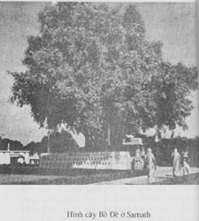

<html>
<head>
<META HTTP-EQUIV="Content-Language" CONTENT="en-au">
<META HTTP-EQUIV="Content-Type" CONTENT="text/html; charset=utf-8">
<META NAME="GENERATOR" CONTENT="Microsoft FrontPage 5.0">
<META NAME="ProgId" CONTENT="FrontPage.Editor.Document">
<TITLE>Thanh tich Phat Giao - An Do</TITLE>
</head>
<script async src="https://www.googletagmanager.com/gtag/js?id=G-P9GG73NE6J"></script>
<script>
  window.dataLayer = window.dataLayer || [];
  function gtag(){dataLayer.push(arguments);}
  gtag('js', new Date());
  gtag('config', 'G-P9GG73NE6J');
</script>

<body BGCOLOR="#FFFFFF" LEFTMARGIN="0" RIGHTMARGIN="0" TOPMARGIN="0" VLINK="#0000FF">

<DIV ALIGN="center">
  <CENTER>
  <TABLE BORDER="0" CELLSPACING="0" WIDTH="100%" BGCOLOR="#FFECD9" STYLE="border-collapse: collapse" BORDERCOLOR="#111111" CELLPADDING="0">
    <TR>
      <TD WIDTH="20%"><STRONG><A HREF="https://budsas.hopan.vn/index.html">
      <FONT SIZE="2" FACE="Times New Roman">Trang gốc</FONT></A></STRONG></TD>
      <TD WIDTH="60%">
      <P ALIGN="center"><B><FONT COLOR="#008000" FACE="Times New Roman">Trang 
      web BuddhaSasana</FONT></B></TD>
      <TD WIDTH="20%">
      <P ALIGN="right"><FONT FACE="Times New Roman" SIZE="2"><STRONG>
      <A HREF="../1-misc/uninotes.html">Times</A></STRONG> (Unicode) font</FONT></TD>
    </TR>
  </TABLE>
  </CENTER>
</DIV>
<DIV ALIGN="center">
  <CENTER>
  <TABLE BGCOLOR="#FFFFFF" BORDER="0" CELLPADDING="10" CELLSPACING="0" WIDTH="100%">
    <TR>
      <TD BGCOLOR="#DADAB6">&nbsp;</TD>
      <TD WIDTH="700">
      <DIV ALIGN="center">
        <CENTER>
        <TABLE BORDER="0" CELLPADDING="0" CELLSPACING="0" STYLE="border-collapse: collapse" BORDERCOLOR="#111111" WIDTH="567" ID="AutoNumber2">
          <TR>
            <TD WIDTH="134">
            <FONT FACE="Times New Roman">
            </FONT></TD>
            <TD WIDTH="433">
      <P ALIGN="center">
      <B>
      <FONT FACE="Times New Roman" SIZE="5" COLOR="#800000">Những Thánh Địa Phật Giáo tại Ấn Độ
      </FONT></B></P>
      <P ALIGN="center"><FONT FACE="Times New Roman">
      <SPAN STYLE="font-size: 14pt">Nguyên bản: Buddhist Shrines In India<O:P>
      </O:P>
      </SPAN></FONT></P>
      <P ALIGN="center">
      <SPAN STYLE="font-size: 14pt; font-style:italic; font-weight:700">
      <FONT FACE="Times New Roman" COLOR="#000080">Thích nữ Minh Tâm<O:P> dịch</O:P></FONT></SPAN></P>
            </TD>
          </TR>
        </TABLE>
        </CENTER>
      </DIV>
      <HR>
      <DIV ALIGN="center">
        <CENTER>
        <TABLE BORDER="0" CELLPADDING="10" CELLSPACING="0" STYLE="border-collapse: collapse" BORDERCOLOR="#111111" WIDTH="400" ID="AutoNumber1" BGCOLOR="#FFECD9">
          <TR>
            <TD WIDTH="375">
      <P ALIGN="center"><B><FONT FACE="Times New Roman" SIZE="4">Mục Lục:<O:P> 
      </O:P>
      </FONT></B></P>
      <P><FONT FACE="Times New Roman">Lời giới thiệu<O:P> </O:P>
      </FONT></P>
      <P><FONT FACE="Times New Roman">Thánh địa thứ nhất: Lâm Tỳ Ni<O:P> <BR>
      </O:P>
      Thánh địa thứ hai: Bồ Đề Đạo Tràng<O:P> <BR>
      </O:P>
      Thánh địa thứ ba: Sarnath<O:P> <BR>
      </O:P>
      Thánh địa thứ tư: Kusinagara<O:P> <BR>
      </O:P>
      Thánh địa thứ năm: Sravasti<O:P> <BR>
      </O:P>
      Thánh địa thứ sáu: Sankasya<O:P> <BR>
      </O:P>
      Thánh địa thứ bẩy: Rajagriha<O:P> <BR>
      </O:P>
      Thánh địa thứ tám: Vaisali<O:P> </O:P>
      </FONT></P>
      <P><FONT FACE="Times New Roman">Những địa danh quan trọng:<O:P> </O:P>
      </FONT></P>
      <BLOCKQUOTE>
        <P><FONT FACE="Times New Roman">-Sanchi<O:P> <BR>
        </O:P>
        -Ajanta và Ellora<O:P> <BR>
        </O:P>
        -Nalanda<O:P> </O:P>
        </FONT></P>
      </BLOCKQUOTE>
      <P><FONT FACE="Times New Roman">Lời kết<O:P> </O:P>
      </FONT></P>
            </TD>
          </TR>
        </TABLE>
        </CENTER>
      </DIV>
      <P ALIGN="center"><FONT FACE="Times New Roman" COLOR="#800000"><SPAN STYLE="font-weight: 700">
      <FONT SIZE="4">L</FONT></SPAN><B><FONT SIZE="4">ời mở đầu:</FONT><O:P><FONT SIZE="4">
      </FONT></O:P>
      </B></FONT><B><SPAN STYLE="font-size: 14pt"><FONT FACE="Times New Roman">
      <O:P></O:P>
      </FONT></SPAN></B></P>
      <P><FONT FACE="Times New Roman">Kính bạch chư Tôn Đức, </FONT></P>
      <P><FONT FACE="Times New Roman">Con xin đê đầu đãnh lễ cảm niệm công đức 
      chỉ dạy của chư Tôn Đức và nguyện cố gắng tu học hơn nữa để báo đáp hồng 
      ân Chư Phật Tổ và công lao dạy dỗ của chư Tôn Đức.<O:P> </O:P>
      </FONT></P>
      <P><FONT FACE="Times New Roman">Kính nguyện Chư Phật gia hộ chư Tôn Đức 
      pháp thể khinh an, chúng sanh dị độ để dìu dắt chúng con trên bước đường 
      tu học.<O:P> </O:P>
      </FONT>
      <O:P></O:P>
      </P>
      <P ALIGN="center"><FONT FACE="Times New Roman">Nam Mô Chứng Minh Sư Bồ Tát 
      Ma Ha Tát.<O:P> <BR>
      </O:P>
      Nam Mô Công Đức Lâm Bồ Tát tác đại chứng 
      minh.<O:P> </O:P>
      &nbsp;<O:P> </O:P>
      &nbsp;<O:P> </O:P>
      </FONT></P>
      <P ALIGN="right"><I><B><FONT FACE="Times New Roman">Tỳ Khưu Ni TN Minh Tâm cẩn bút<O:P>
      </O:P>
      </FONT></B></I></P>
      <P ALIGN="center"><FONT FACE="Times New Roman">-ooOoo-</FONT></P>
      <P><FONT FACE="Times New Roman">Kính gởi quí Phật tử,<O:P> </O:P>
      &nbsp;<O:P> </O:P>
      </FONT></P>
      <P><FONT FACE="Times New Roman">Nhận được sự góp ý, phê bình, khuyến khích 
      và ủng hộ của các Phật tử xa gần, tôi vô cùng cám ơn và cố gắng hết sức 
      sửa chữa những khuyết điểm; mong các tác phẩm sau này sẽ càng ngày càng 
      hoàn hảo hơn.<O:P> </O:P>
      </FONT></P>
      <P><FONT FACE="Times New Roman">Với ý nghĩ mở rộng thêm tầm kiến thức Phật 
      Giáo cho các Phật tử mới bước chân vào đạo, cần hiểu sâu thêm về lịch sử 
      Phật Giáo, tôi cố gắng dịch quyển &quot;Buddhist Shrines In India&quot; do nhà xuất 
      bản Patiala House tại New Delhi ấn hành năm 1951, và đã được tái bản lần I 
      vào năm 1956, lần II vào năm 1968, và lần III vào năm 1994.<O:P> </O:P>
      </FONT></P>
      <P><FONT FACE="Times New Roman">Dù quyển sách này đã xuất bản lâu năm, 
      nhưng với văn phong dễ hiểu, gọn gàng, xúc tích, sẽ không làm người đọc 
      mệt mỏi, nhàm chán khi đọc một tác phẩm thuộc dạng nghiên cứu, tài liệu.<O:P>
      </O:P>
      </FONT></P>
      <P><FONT FACE="Times New Roman">Kính mong các bậc cao minh, thiện hữu trí 
      thức giúp đỡ và phê bình.<O:P> </O:P>
      </FONT></P>
      <P><FONT FACE="Times New Roman">Kính chúc quí Phật tử tăng tiến tu học, 
      phát tâm cầu Vô Thượng Bồ Đề.<O:P> </O:P>
      </FONT></P>
      <P><FONT FACE="Times New Roman">Kính nguyện đem công đức này hồi hướng cho 
      tất cả pháp giới chúng sanh đều trọn thành Phật đạo.<O:P> </O:P>
      </FONT></P>
      <P ALIGN="right"><FONT FACE="Times New Roman"><B><I>Tỳ Khưu Ni TN Minh Tâm đệ bút</I></B>.</FONT></P>
      <HR>
      <P ALIGN="center"><B><FONT FACE="Times New Roman" COLOR="#800000"><I>
      <FONT SIZE="4">Lời giới 
      thiệu</FONT></I><FONT SIZE="4">:</FONT><O:P><FONT SIZE="4"> </FONT> </O:P>
      </FONT></B></P>
      <P><FONT FACE="Times New Roman"><FONT SIZE="6">T</FONT>hế kỷ thứ 6 trước Công Nguyên là thế kỷ 
      hoàng kim của các tôn giáo Á Đông. Những biến cố mang tính cách lịch 
      sử vĩ đại đã lần lượt xảy ra tại các nước Đông Phương: Khổng Tử và Lão Tử 
      tại Trung Hoa, Zoroaster tại Iran (Ba Tư), Mahavira và Đức Phật Thích Ca 
      tại Ấn Độ.<O:P> </O:P>
      </FONT></P>
      <P><FONT FACE="Times New Roman">Trong vùng lốc xoáy tôn giáo đó, đaọ Phật 
      do Đức Thích Ca sáng lập, đã đứng vững và tiếp tục lớn mạnh như một ngọn 
      đuốc sáng để đáp ứng nhu cầu tâm linh của loài người. Đaọ Phật đã 
      đem đến cho con người một đời sống tâm linh hoàn hảo. Lẽ dĩ nhiên, 
      đaọ Phật cũng không thoát ra ngoài qui luật chung của vũ trụ &quot;thành, trụ, 
      hoại, không,&quot; và cũng đã trãi qua không biết bao nhiêu biến cố thăng trầm 
      của lịch sử các dân tộc và tôn giáo; nhưng đạo Phật vẫn tồn tại và còn tồn 
      tại mãi trong dòng sinh mệnh của các đất nước đạo Phật đã đi qua và để lại 
      dấu ấn.<O:P> </O:P>
      </FONT></P>
      <P><FONT FACE="Times New Roman">Nói đến đạo Phật, thiết tưởng chúng ta 
      phải nhắc đến vị giáo chủ đã sáng lập ra tôn giáo đó.<O:P> </O:P>
      </FONT></P>
      <P><FONT FACE="Times New Roman">Vào thế kỷ thứ 6, năm 566 trước Công 
      Nguyên, tại thành Ca Tỳ La Vệ (Kapilavatsu) của một tiểu vương quốc tại Ấn 
      Độ, Thái tử Tất Đạt Đa (Siddhartha) đã giáng sanh trong sự chờ đón trọng 
      thể huy hoàng của hoàng gia và dân chúng. Thái tử là con của đức vua 
      Tịnh Phạn (Sudhodana) và hoàng hậu Ma Gia (Mayadevi). Thái tử ra đời 
      tại vườn Lâm Tỳ Ni (Lumbini), gần sát biên giới Nepal và Ấn Độ.
      </FONT>
      <O:P></O:P>
      </P>
      <P><FONT FACE="Times New Roman">Một đạo sĩ đã tiên đoán rằng &quot;Thái tử, 
      hoặc sẽ trở thành một đaị vương cai trị tứ châu thiên hạ, hoặc sẽ xuất gia 
      tu hành đắc quả Vô Thượng Chánh Đẳng Chánh Giác.&quot; Vua cha nghe vậy, 
      vội tìm đủ mọi cách ngăn chận. Nhưng những phương cách đó đều vô 
      hiệu, ngay cả người vợ tài sắc của Thái tử là công nương Da Du Đà La 
      (Yasodhara) và đưá con mới chào đời La Hầu La (Rahula) cũng không thể dẹp 
      tan được ý nghĩ thoát ly mọi ràng buộc thế tục của Thái tử. Thái tử 
      đã nhìn thấy được cảnh sanh, lão, bệnh, tử của con người, đã hiểu rõ sự vô 
      thường thay đổi của vạn hữu hàm linh và Thái tử muốn đi tìm phương pháp 
      giải thoát khổ đau cho chính mình và nhân loại. Không lâu sau đó, 
      Thái tử đã thoát ly hoàng cung, rời xa mái ấm gia đình, dấn thân vào cát 
      bụi.<O:P> </O:P>
      </FONT></P>
      <P><FONT FACE="Times New Roman">Sau 11 năm tầm sư học đaọ, khổ hạnh đủ 
      mùi, tham bái cầu đạo với nhiều danh sư, Bồ Tát Tất Đạt Đa vẫn không thấy 
      thoả mãn. Ngài nhận thấy phương cách tu tập, lý thuyết của các đạo 
      sư vẫn tiêu cực bế tắc. Ngài liền bỏ lối tu tập đó và một mình một 
      bóng đến ngồi tham thiền bên bờ sông Ni Liên Thiền (Uruvila). Qua 49 
      ngày đêm nhập định, Bồ Tát Tất Đạt Đa hoát nhiên đại ngộ, chứng thành quả 
      Vô Thượng Chánh Đẳng Chánh Giác, tôn hiệu là Đức Phật Thích Ca Mâu Ni.&nbsp; 
      Sau khi chứng đắc chân lý, Đức Phật đã đến gặp năm anh em Kiều Trần Như 
      tại vườn Lộc Uyển. Bài thuyết pháp đầu tiên của Đức Phật nói về pháp 
      Tứ Đế được gọi là Chuyển Pháp Luân (Dhamma - Chakrapravartana). Giáo 
      lý Tứ Đế (Khổ, Tập, Diệt, Đạo) xuyên suốt Bát Thánh Đạo hay Bát Chánh Đạo 
      (Chánh Kiến, Chánh Tư Duy, Chánh Ngữ, Chánh Nghiệp, Chánh Mạng, Chánh Tinh 
      Tấn, Chánh Định, Chánh Niệm) đã hướng dẫn bao nhiêu người giải thoát từ 
      dòng sông đau khổ đến bến bờ cực lạc hạnh phúc.<O:P> </O:P>
      </FONT></P>
      <P><FONT FACE="Times New Roman">Suốt 45 năm, Đức Phật và hàng đại đệ tử 
      của Ngài đã đi khắp lãnh thổ Ấn Độ, từ bờ sông Hằng đến những làng quê hẻo 
      lánh, cốt yếu để truyền bá chánh pháp giải thoát lầm mê cho chúng sanh. Ánh sáng đạo Phật truyền đến đâu thì bóng tối vô minh tan đến đó. Hàng triệu triệu người đã tìm thấy hạnh phúc và giải thoát. Đức Phật 
      nhập diệt tại thành Câu Thi Na (Kusinagara) năm 486 trước Công Nguyên. Năm ấy, Ngài được 80 tuổi.<O:P> 
      </O:P>
      </FONT></P>
      <P><FONT FACE="Times New Roman">Đạo Phật đã phát triển rực rỡ tại Ấn Độ, 
      nhất là tại thành Câu Xá La (Kosala) và Ma Kiệt Đà (Magadha) còn được gọi 
      là trung tâm Phật Giáo. Nhưng sau khi Đức Phật nhập diệt khoảng 200 
      năm, đạo Phật cũng theo những biến cố lịch sử mà có nhiều thăng trầm 
      thay đổi. Trong những biến cố lịch sử đó, trận chiến thảm khốc với 
      quân Kalinga của vua A Dục (Asoka) là bước ngoặt nổi tiếng trong lịch sử 
      Phật Giáo Ấn Độ.<O:P> </O:P>
      </FONT></P>
      <P><FONT FACE="Times New Roman">Vua A Dục đã rùng mình tỉnh giấc mộng đế 
      vương khi nhìn xác người ngựa đẫm máu nằm chết la liệt ở chiến trường. Hình ảnh đẫm máu đó đã khích động mãnh liệt lòng vị vua bạo tàn đó, khiến 
      ông ta hối hận đã gây ra cảnh tương tàn hủy diệt sanh linh. Từ đó, A 
      Dục Vương đã chuyển hoá tâm hồn, tìm hiểu đạo Phật và qua giáo lý, A Dục 
      Vương đã thuần hoá từ từ trở thành một vị vua nhân đức nhất của lịch sử Ấn 
      Độ.<O:P> </O:P>
      </FONT></P>
      <P><FONT FACE="Times New Roman">Những thánh tích Phật Giáo còn sót lại 
      trên lãnh thổ Ấn Độ đều có dấu ấn trùng tu lại của vua A Dục; nhờ thế mà 
      ngày nay chúng ta có thể học và hiểu rõ thêm về những di tích lịch sử Phật 
      Giáo qua những bia ký và thánh địa.<O:P>&nbsp; </O:P>
      </FONT></P>
      <O:P>
      <P ALIGN="center">
      <FONT FACE="Times New Roman">
      </FONT></O:P><FONT FACE="Times New Roman">
      </FONT></P>
      <HR>
      <P ALIGN="center"><FONT FACE="Times New Roman" COLOR="#800000"><B><FONT SIZE="4">Những 
      Thánh Địa</FONT>
      </B></FONT></P>
      <P><FONT FACE="Times New Roman"><FONT SIZE="6">Đ</FONT>ức Phật Thích Ca Mâu Ni đã để lại dấu 
      chân Ngài trên toàn lãnh thổ Ấn và hình bóng Ngài đã khắc sâu trong tâm tư 
      nhân loại. Trong thời kỳ chánh pháp hưng thịnh, các địa danh quan 
      trọng đều được nhắc tới. Bốn thánh địa nổi tiếng của Phật Giáo nói 
      riêng và của Ấn Độ nói chung là: Vườn Lâm Tỳ Ni (Lumbini) nơi Đức Phật 
      giáng sanh, Bồ Đề Đạo Tràng (Bodh-Gaya) nơi Đức Phật thành đạo, Lộc Uyển 
      (Sarnath) nơi Đức Phật chuyển pháp luân đầu tiên, và Câu Thi Na 
      (Kusinagara) nơi Đức Phật nhập diệt.</FONT></P>
      <P><FONT FACE="Times New Roman">Bốn địa danh quan trọng khác cũng được đề 
      cập đến trong lịch sử Phật Giáo là bốn nơi Đức Phật đã thi triển thần 
      thông để giáo hoá điều phục chúng sanh. Những địa danh đó là: Sravasti (thủ phủ của Kosala) nơi Đức Phật đã thi triển thần thông điều 
      phục Ca Diếp (Puruna Kasyapa), người lãnh đạo phái Tirthika (đạo thờ thần 
      lửa).&nbsp; Nơi thứ hai là Sankasya, Đức Phật đã lên tầng trời 
      thứ 33 để giáo hoá cho hoàng hậu Ma Gia (mẫu thân của Ngài).&nbsp; 
      Nơi thứ ba là Rajagriha (thủ phủ của Ma Kiệt Đà), nơi đây Đức Phật đã điều 
      phục con voi say do Đề Bà Đạt Đa sai khiến ra giết Đức Phật. Nơi thứ 
      tư là Vệ Sá Ly (Vaisali), nơi đây Đức Phật đã thọ dụng bát mật ong do đàn 
      khỉ dâng cúng.<O:P> </O:P>
      </FONT></P>
      <P><FONT FACE="Times New Roman">Những địa danh nổi tiếng này và những biến 
      cố trong cuộc đời Đức Phật đã là đề tài cho hàng ngàn tác phẩm nghệ thuật 
      Phật Giáo từ xưa cho đến nay.<O:P> </O:P>
      </FONT></P>
      <P><FONT FACE="Times New Roman">Những địa danh này đã lôi cuốn không biết 
      bao nhiêu khách thập phương đến chiêm bái, và nhiều ngôi đền, tháp, bia ký 
      cũng được xây dựng chung quanh những thánh địa này. Tuy nhiên, trong 
      thời kỳ đạo Phật suy tàn tại Ấn Độ, một vài thánh địa đã bị hoang phế tàn 
      rụi theo cát bụi và thời gian.<O:P> </O:P>
      </FONT></P>
      <P><FONT FACE="Times New Roman">Ngày nay, các nhà khảo cổ Ấn Độ đang trên 
      đường khai quật lại di tích và trùng tu lại các thánh địa.<O:P> </O:P>
      </FONT></P>
      <HR>
      <P ALIGN="center"><B><FONT FACE="Times New Roman" COLOR="#800000">Thánh địa thứ nhất:
      <BR>
      </FONT><FONT FACE="Times New Roman" COLOR="#800000" SIZE="4">Lâm Tỳ 
      Ni (Lumbini)</FONT></B></P>
      <P><FONT FACE="Times New Roman"><FONT SIZE="6">L</FONT>âm Tỳ Ni (Lumbini), nơi Đức Phật giáng 
      sanh, là một thánh địa ở vùng Rummindei, cách một dặm về phía Bắc vùng 
      Paderia và hai dặm phía Bắc vùng Bhagwanpur nước Nepal. Ngày nay các 
      nhà khảo cổ xác định Lâm Tỳ Ni nằm về phía Bắc quận Basti của xứ Uttar 
      Pradesh.</FONT></P>
      <P><FONT FACE="Times New Roman">Theo tài liệu sử Phật Giáo, Lâm Tỳ Ni tọa 
      lạc cách thành Ca Tỳ La Vệ (Kapilavastu) 12 dặm. Sử chép rằng, &quot;Theo 
      tục lệ, Hoàng Hậu Ma Gia phải trở về quê mẹ để sanh nở. Khi đến động 
      hoa Lâm Tỳ Ni, bà cảm thấy trong người sảng khoái lạ thường. Cảnh 
      vật xinh đẹp tươi mát chào đón, chim muông hót ríu rít trên cây, gió hiu 
      hiu thổi làm tâm hồn người dịu êm nhẹ nhàng, Hoàng Hậu thong thả dạo bước 
      ngắm nhìn thưởng thức cảnh trí thiên nhiên.<O:P> </O:P>
      </FONT></P>
      <P><FONT FACE="Times New Roman">Khi đến tàng cây Sa La, Hoàng Hậu dơ tay 
      vịn cành hoa sà thấp trước mặt và kỳ lạ thay, Thái tử giáng trần trong tư 
      thế đứng của người mẹ. Chư Thiên tung hoa chào đón, bẩy con rồng 
      phun nước thơm tắm rửa Thái tử và Thái tử đi 7 bước dõng dạc tuyên 
      bố rằng: &quot;Ta là đấng Vô Thượng Đạo Sư của Trời Người.&quot; (Thiên thượng 
      thiên hạ, duy Ngã độc tôn). Từ vườn Lâm Tỳ Ni, Thái tử được các cung 
      nô hầu hạ trở về thành Ca Tỳ La Vệ.<O:P> </O:P>
      </FONT></P>
      <P><FONT FACE="Times New Roman">Quang cảnh giáng sanh của Thái tử Tất Đạt 
      Đa là đề tài cho hàng ngàn tác phẩm nghệ thuật Ấn mà ngày nay người ta đã 
      tìm thấy trong điêu khắc và tranh vẽ.<O:P> </O:P>
      </FONT></P>
      <P><FONT FACE="Times New Roman">Nhận dạng được địa danh của Lâm Tỳ Ni, 
      thiết tưởng chúng ta phải nhớ đến công ơn của vua A Dục. Hai mươi 
      năm sau ngày đăng quang lên ngôi hoàng đế, Vua A Dục đã đích thân đi chiêm 
      bái đãnh lễ các thánh địa và chính Vua đã sai người đúc một cột trụ khắc 
      lên dòng chữ &quot;Địa danh này là nơi Đức Phật giáng sanh.&quot; Vua A Dục 
      cũng đã giảm 5% thuế hằng năm cho dân chúng vùng này. Đó là một đặc 
      ân của vua A Dục đối với dân cư địa phương nơi Đức Phật giáng sanh. Bên cạnh cột trụ này, người ta còn thấy một ngôi đền xưa cũ khắc chạm hình 
      ảnh quang cảnh giáng sanh của Đức Phật.<O:P> </O:P>
      </FONT></P>
      <P><FONT FACE="Times New Roman">Lâm Tỳ Ni đã trở thành một thánh địa quan 
      trọng hàng đầu đối với người Phật tử. Ngàn năm trước, những du tăng 
      Trung Quốc đều lần lượt viếng thăm Lâm Tỳ Ni. Chung quanh cột trụ do 
      vua A Dục sai đúc, các vị du tăng cũng đã tự đắp lấy những bia đá lớn nhỏ 
      đánh dấu những cuộc viếng thăm cúng dường. Về sau, chính phủ Nepal 
      ra lệnh khai quật vùng này để tìm thêm tài liệu chứng cứ.<O:P>&nbsp;
      </O:P>
      </FONT></P>
      <P ALIGN="center">
      <FONT FACE="Times New Roman">
      
      </FONT></P>
      <HR>
      <P ALIGN="center"><B><FONT FACE="Times New Roman" COLOR="#800000">Thánh địa thứ hai:
      <BR>
      <FONT SIZE="4">Bồ 
      Đề Đạo Tràng (Bodh-Gaya)</FONT></FONT></B></P>
      <P><FONT FACE="Times New Roman"><FONT SIZE="6">T</FONT>hánh địa nổi tiếng thứ hai trong lịch sử 
      Phật Giáo là Bồ Đề Đạo tràng, nơi Đức Phật thành đạo. Nơi đây Đức 
      Phật đã tọa thiền suốt 49 ngày đêm dưới tàng cây pipala, bên cạnh dòng 
      sông Ni Liên Thiền. Vì hiện tượng bất diệt đó, địa danh này đã trở 
      thành Bồ Đề Đạo Tràng, và cây cổ thụ pipala được đặt tên là cây Bồ Đề (có 
      nghĩa là &quot;giác ngộ, bodhi tree&quot;).</FONT></P>
      <P><FONT FACE="Times New Roman">Có thể nói, Bồ Đề Đạo Tràng đã trở thành 
      một cái nôi của lịch sử văn hoá Phật Giáo và các đệ tử Phật đều ao ước 
      được ít nhất một lần đến chiêm bái nơi này. Tòa cỏ Đức Phật ngồi 
      thiền, cây Bồ Đề đều được chăm sóc kỹ lưỡng. Những bia tháp và những 
      cột đá lớn nhỏ chung quanh Bồ Đề Đạo Tràng, do các du tăng Ấn Độ, Trung 
      Quốc và các nước khác tự đắp lấy cúng dường khi đến chiêm bái thánh địa 
      này, và tài liệu ghi chép của ngài Tam Tạng Huyền Trang, đã cho chúng ta 
      hình dung ra được quang cảnh sầm uất rực rỡ của địa danh này trong quá khứ 
      hơn 2500 năm trước. Cây Bồ Đề bây giờ là cây cháu cây chắt của hàng 
      ngàn cây Bồ Đề gốc, nhưng cành lá vẫn xum xuê, thân cây to lớn rắn chắc.<O:P>
      </O:P>
      </FONT></P>
      <P><FONT FACE="Times New Roman">Chính ngài Alexander Cunningham và một số 
      các nhà bác học khác là những người đầu tiên khai quật những bia ký và cột 
      trụ tại Bồ Đề Đạo Tràng này. Đại tháp Bồ Đề đã được trùng tu lại 
      nhiều lần với một kinh phí rất to lớn. Vua A Dục cũng đã xây dựng 
      một ngôi đền tại thánh địa này. Ngôi đền do vua A Dục xây đã được 
      miêu tả nhiều trong nghệ thuật Ấn; tuy nhiên di tích của ngôi đền này đã 
      không còn tìm thấy dấu vết nữa.<O:P> </O:P>
      </FONT></P>
      <P><FONT FACE="Times New Roman">Ngôi đại tháp Bồ Đề chúng ta thấy hiện nay 
      là ngôi tháp mới được trùng tu lại sau này. Theo sự miêu tả của ngài 
      Tam Tạng Huyền Trang thì đại tháp Bồ Đề đã được xây dựng từ thế kỷ thứ 7 
      sau Công Nguyên theo mô hình của một đại bảo tháp tại Miến Điện (Burma).<O:P>
      </O:P>
      </FONT></P>
      <P><FONT FACE="Times New Roman">Hiện nay, ngôi đại bảo tháp tại Bồ Đề Đạo 
      Tràng cao gần 160 bộ và xây theo hình tứ giác. Trên đỉnh là một ngọn tháp 
      nhọn. Trong tháp, người ta khắc chạm hình tượng Đức Phật thành đạo. Phiá Bắc của ngôi tháp là một con đường hẹp cách mặt đất 4 bộ. Người 
      ta miêu tả đó là con đường nhỏ mà Đức Phật, sau khi thành đạo, đã đi thiền 
      hành qua lại trên con đường này. Ngoài ra, lại còn có nhiều hình hoa 
      sen được chạm trỗ trên con đường đó vì người ta tin rằng mỗi bước chân Đức 
      Phật đi đều có hoa sen nở tung ra đến đó. Người ta còn thấy một mảng 
      đá cát đỏ cạnh cây Bồ Đề, tượng trưng cho đệm cỏ mà hơn 2540 năm trước, 
      Đức Phật đã ngồi và chứng đạo. Còn rất nhiều những kiến trúc chạm 
      trỗ khác khắc ghi lại hình ảnh của Đức Phật và các đại đệ tử, các Phạm 
      Thiên. Những kiến trúc thẩm mỹ đó đã hấp dẫn hàng triệu người đến 
      chiêm bái Bồ Đề Đạo Tràng mỗi năm càng ngày càng đông, tạo nên một luồng 
      sóng du lịch khổng lồ về quê Đức Phật giúp cho nền tài chánh quốc phòng Ấn 
      thêm một phần lợi tức đáng kể.<O:P> </O:P>
      </FONT></P>
      <HR>
      <P ALIGN="center"><B><FONT FACE="Times New Roman" COLOR="#800000">Thánh Địa thứ ba:<O:P>
      <BR>
      </O:P>
      <FONT SIZE="4">Sarnath</FONT><O:P><FONT SIZE="4"> </FONT>
      </O:P>
      </FONT></B></P>
      <P><FONT FACE="Times New Roman"><FONT SIZE="6">M</FONT>ột thánh địa đáng ghi nhớ nữa trong lịch 
      sử Phật Giáo là thánh địa Isipitana hay Sarnath. Nơi đây, trong sự 
      tĩnh lặng của vườn Lộc Uyển, Đức Phật đã khai giảng bài pháp đầu tiên cho 
      5 anh em ông Kiều Trần Như trước kia cùng tu khổ hạnh với Ngài. Nội 
      dung bài thuyết pháp nói về những khổ đau của kiếp người và những phương 
      cách giải hóa những thống khổ đó. Sự kiện này đã được mệnh danh là 
      &quot;Chuyển Pháp Luân,&quot; có nghĩa là Đức Phật chuyển bánh xe pháp đầu tiên đánh 
      dấu một kỷ nguyên huy hòang rực rỡ của một tôn giáo kéo dài bền vững trên 
      2500 năm cho đến nay.</FONT></P>
      <P><FONT FACE="Times New Roman">Sarnath là nơi xuất phát tôn giáo do Đức 
      Phật Thích Ca Mâu Ni sáng lập. Vì thế, Sarnath đã trở thành trung 
      tâm Phật giáo lớn nhất tồn tại trên 1500 năm. Trong những thế kỷ đầu 
      tiên của thời kỳ Phật giáo hưng thịnh, dưới triều đại vua A Dục, Sarnath 
      đã trở thành một nơi tranh luận nổi tiếng giữa các tông phái và đạo giáo. Hai ngài Pháp Hiền và Trần Huyền Trang đã đến chiêm bái thánh tích này vào 
      thế kỷ thứ 5 và thế kỷ thứ 7 sau Công nguyên. Hai ngài đã để lại cho 
      chúng ta nhiều tài liệu giá trị về lịch sử thánh địa này. Nơi đây, 
      vua A Dục cũng đã sai người xây dựng một cột trụ đánh dấu khu vực ẩn cư 
      trong nhiều tòa nhà lớn nhỏ khác nhau của hơn 1500 vị tăng sĩ Phật giáo 
      đến Sarnath. Trong những di tích còn sót lại đó, người ta phải nhắc 
      đến một ngôi đền tuyệt mỹ có tượng Phật bằng đồng trong hình tướng chuyển 
      Pháp luân, một ngôi cổ tháp và một cột trụ bằng đá. Tất cả đều do 
      vua A Dục xây dựng. Thánh địa này đã phát triển rực rỡ trong nhiều 
      triều đại và cũng đã được trùng tu lại nhiều lần. Theo bia ký và 
      những chứng cứ khảo cổ, người ta biết rằng ngôi đền có tượng Đức Phật 
      Chuyển Pháp Luân đã được trùng tu lại theo lệnh của hòang hậu Kumaradevi 
      vào phân nửa đầu thế kỷ thứ 12 trước Công nguyên. Chẳng bao lâu sau, 
      địa danh này bị quân đội của Muhammad Ghori, của đạo quân Huns và Mahmud 
      Ghazni phá hủy hòan tòan, nhưng Sarnath lại được trùng tu do công sức của 
      các tín đồ Tăng Ni Phật giáo khắp nơi. Tuy nhiên về sau, vì đạo Phật 
      đã suy tàn tại Ấn Độ, Sarnath, một địa danh lịch sử nổi tiếng và huy hòang 
      một thời đã bị tiêu hủy mất dấu trong đổ nát hoang tàn của cát bụi thời 
      gian.</FONT></P>
      <P ALIGN="center">
      <FONT FACE="Times New Roman">
      </FONT></P>
      <P><FONT FACE="Times New Roman">Ngày nay, viện khảo cổ Ấn đã tổn phí sức 
      lực và tài chánh thật nhiều trong công cuộc khai quật và trùng tu lại 
      thánh địa Sarnath. Khi chúng ta đến Sarnath từ hướng Varanasi, chúng 
      ta sẽ thấy một mặt phẳng bát giác bằng gạch nung nhô lên khỏi mặt đất. Mặt phẳng này là di tích còn sót lại của một ngôi tháp trước kia đánh dấu 
      nơi Đức Phật đến gặp 5 anh em ông Kiều Trần Như. Ngôi tháp bát giác 
      này được trùng tu lần sau cùng bởi tiểu vương Akbar năm 1588, thuộc triều 
      đại Gupta.</FONT></P>
      <P><FONT FACE="Times New Roman">Trong số những di tích tàn rụi còn sót lại 
      không bị các đạo quân tàn phá là ngôi tháp Dhamekh cao hơn mặt đất 150 bộ. Ngôi tháp này được xây cất bằng nguyên liệu bền cứng, những khối đá khổng 
      lồ bằng gạch và mang hình dáng cột trụ. Những hình tượng khắc trên 
      mặt tháp cho chúng ta biết ngôi tháp Dhamekh được xây vào triều đại Gupta 
      thế kỷ thứ 6 trước Công nguyên. Danh từ &quot;Dhamekh&quot; phát xuất từ 
      nguyên từ Phạn ngữ &quot;Dharmekh - chánh pháp&quot;. Cách ngôi tháp này không 
      xa về hướng Tây là một ngôi tháp nhỏ do vua A Dục xây cất. Tháp vua 
      A Dục xây, theo lời miêu tả của ngài Trần Huyền Trang, có thể là nơi Đức 
      Phật tọa thiền thuyết pháp cho 5 anh em Kiều Trần Như. Xa hơn một tí 
      về phía Bắc, là một côt trụ hình đầu sư tử được khắc chạm rất công phu. Cột trụ sư tử này hiện nay được trưng bày tại viện bảo tàng khảo cổ gần 
      đó. Tại ngôi tháp này, chúng ta còn thấy sót lại những mảnh đá lớn 
      của nền nhà chánh điện và những cột lớn nhỏ của một cổng chính dẫn lối vào 
      chánh điện ngôi tháp. Ngòai ra, chúng ta còn thấy rất nhiều mãnh vỡ 
      của các tượng Phật và Bồ tát mang dấu ấn điêu khắc của nhiều triều đại 
      khác nhau. Một bức tượng Phật đẹp nhất tạc bằng đá cát khắc hình Đức 
      Phật Chuyển Pháp Luân là bức tượng tuyệt mỹ mang dấu nghệ thuật điêu khắc 
      triều đại Gupta.</FONT></P>
      <P ALIGN="center">
      <FONT FACE="Times New Roman">
      </FONT></P>
      <P><FONT FACE="Times New Roman">Tất cả những bức tượng điêu khắc vào thời 
      đại này đều khắc theo tám biến cố lịch sử của cuộc đời Đức Phật như Đức 
      Phật giáng sanh, thành đạo, chuyển Pháp luân, nhập Niết bàn, thi triển 
      thần thông, v.v. Đáng kể nữa là một bức tàn lọng bằng đá khắc trọn 
      vẹn bài pháp Tứ Đế bằng tiếng cổ Pàli.</FONT></P>
      <P><FONT FACE="Times New Roman">Dù đã bị tàn phá nhiều theo thời gian, 
      Sarnath vẫn còn hấp dẫn du khách tìm về Ấn Độ để tưởng nhớ lại hình ảnh 
      Đức Từ Phụ và giáo âm của Ngài vẫn vang vọng bất diệt trong lòng người con 
      Phật. </FONT> </P>
      <P ALIGN="center">
      <FONT FACE="Times New Roman">
      </FONT></P>
      <HR>
      <P ALIGN="center"><B><FONT FACE="Times New Roman" COLOR="#800000">Thánh địa thứ tư:
      <BR>
      <FONT SIZE="4">Kusinagara</FONT></FONT></B></P>
      <P><FONT FACE="Times New Roman"><FONT SIZE="6">K</FONT>usinagara 
      hay Kusinara (Câu Thi na) là nơi Đức Phật Thích Ca Mâu Ni đã thâu thần 
      tịch diệt năm Ngài 80 tuổi dưới hai tàng cây Sa La. Địa danh này sau 
      được các nhà khảo cổ nhận dạng là Kasia ở quận Deoria của xứ Utta Pradesh.</FONT></P>
      <P><FONT FACE="Times New Roman">Giống như các thánh địa khác liên quan đến 
      những biến cố lịch sử đời Đức Phật, Kusinagara đã trở thành một thánh địa 
      quan trọng để các Phật tử đến chiêm bái đãnh lễ.</FONT></P>
      <P><FONT FACE="Times New Roman">Vào thời điểm đó, hàng ngàn tự viện và bảo 
      tháp đã được xây dựng lên chung quanh thánh địa này. Tuy nhiên, 
      không rõ vì lý do gì, có thể bị đạo quân Hồi giáo phá hủy hay do thời gian 
      phai tàn xóa dấu mà thánh địa này đã bị hoang phế tàn rụi. Hai ngài 
      Pháp Hiền và Huyền Trang, khi đến chiêm bái thánh địa này, cũng phải thốt 
      lên lời ta thán bi thiết khi nhìn cảnh vật hoang liêu đổ nát của 
      Kusinagara.</FONT></P>
      <P><FONT FACE="Times New Roman">Qua những cuộc khai quật để tìm lại dấu 
      vết, người ta đào được một số những mảnh vỡ vụn của các tượng Phật, những 
      cột trụ loang lỗ. Tuy nhiên, căn cứ trên những dấu hiệu của các di 
      tích còn sót lại đó và những bia ký thì chắc chắn nơi đây là thánh địa 
      nhập Niết bàn của Đức Phật. Ngôi tháp Đại Bát Niết Bàn mà vua A Dục 
      xây cất cũng không có thể tìm thấy được nữa và có thể ngôi tháp này đã bị 
      chôn vùi dưới nền tinh xá Niết bàn xây dựng ở triều đại Gupta.</FONT></P>
      <P ALIGN="center">
      <FONT FACE="Times New Roman">
      </FONT></P>
      <P><FONT FACE="Times New Roman">Trong số những di tích đó, người ta tìm 
      được một bức tượng Đức Phật trong tư thế nhập Niết bàn. Bức tượng 
      này cũng bị vỡ vụn và đã được nhà điêu khắc Carlleyle khéo léo hàn gắn 
      chạm trỗ lại. Ngôi đại bảo tháp Ramabhar được dựng ngay tại địa điểm 
      làm lễ trà tỳ kim thân Đức Phật và xá lợi Ngài được phân chia ra làm tám 
      phần đồng nhau cho tám vương quốc lớn mạnh nhất thời đó.</FONT></P>
      <P ALIGN="center">
      <FONT FACE="Times New Roman">
      </FONT></P>
      <P><FONT FACE="Times New Roman">Hiện nay các nhà khảo cổ vẫn còn tiếp tục 
      công cuộc khai quật thánh địa Kusinagara, mong sẽ tìm thêm tài liệu chứng 
      cứ hơn nữa để làm sáng tỏ thêm một địa danh linh thiêng đã được đón nhận 
      kim thân Đức Bổn Sư Thích Ca Mâu Ni Phật</FONT></P>
      <HR>
      <P ALIGN="center"><B><FONT FACE="Times New Roman" COLOR="#800000">Thánh địa thứ năm:<O:P>
      <BR>
      </O:P>
      <FONT SIZE="4">Sravasti</FONT></FONT></B></P>
      <P><FONT FACE="Times New Roman"><FONT SIZE="6">S</FONT>ravasti, thủ phủ của vương quốc Kosala 
      ngày xưa, được các Phật tử tôn sùng vì nơi đây hơn 2540 năm trước, Đức 
      Phật đã thi triển thần thông giáo hóa các đạo sư thờ thần lửa.</FONT></P>
      <P><FONT FACE="Times New Roman">Theo các sử liệu ghi chép lại, Đức Phật đã 
      thi triển các phép lạ như trên thân ra nước, dưới thân ra lửa, trên thân 
      ra lửa, dưới thân ra nước, hay mặt trời mặt trăng chiếu sáng cùng một lúc 
      trên bầu trời, và nhiều hóa thân của Đức Phật. Những phép lạ đó đã 
      là đề tài cho nhiều tác phẩm nghệ thuật Ấn từ các thời đại cổ xưa cho đến 
      nay.</FONT></P>
      <P><FONT FACE="Times New Roman">Ngay trong thời Đức Phật, Sravasti đã là 
      một trung tâm Phật giáo sầm uất phồn thịnh. Chính nơi đây, trưởng 
      giả Cấp Cô Độc đã rãi vàng mua hết đất vườn hoa của Thái Tử Kỳ Đà để xây 
      dựng tinh xá cúng dường Đức Phật và chư tăng. Câu chuyện rãi vàng 
      mua đất của ông Cấp Cô Độc đã khích động mãnh liệt đến các tầng lớp quí 
      tộc vua chúa, khanh hầu, trưởng giả và đó cũng là đầu đề về lòng sùng bái 
      tuyệt đối của ông Cấp Cô Độc cũng như các tác phẩm nghệ thuật Ấn sau này. Càng về sau, nhiều tinh xá, bảo tháp xây cất rải rác chung quanh địa danh 
      này khiến Sravasti thêm nổi tiếng và phồn vinh.</FONT></P>
      <P><FONT FACE="Times New Roman">Các nhà khảo cổ tin rằng Sravasti thuộc 
      địa phương Saheth - Maheth nằm sát biên giới quận Gonda và Bahraich của xứ 
      Utta - Pradesh. Nơi đây họ đã tìm thấy vài bia ký liên quan đến tinh 
      xá Kỳ Viên ở Sravasti.</FONT></P>
      <P ALIGN="center">
      <FONT FACE="Times New Roman">
      </FONT></P>
      <P><FONT FACE="Times New Roman">Địa danh Saheth - Maheth gồm có hai vùng 
      riêng biệt. Vùng lớn nhất, Maheth, rộng 400 mẫu, ngày xưa là một 
      tỉnh lỵ trù phú. Saheth thì chỉ rộng có 32 mẫu, nằm độ 0.25 dặm phía 
      Tây Nam của Kỳ Viên tinh xá. Những cuộc khai quật tại vùng Maheth đã 
      cho chúng ta biết được rằng xưa kia Maheth là một thành phố rất giàu có 
      đông đúc. Saheth, tuy nhỏ hơn, nhưng lại nổi tiếng hơn vì nơi đây 
      Đức Phật đã dừng chân để giáo hóa và còn sót lại nhiều nền nhà của tinh 
      xá, tự viện, bảo tháp; cho nên đa số các tăng sĩ, du khách đều ghé tới 
      Saheth để chiêm bái tham quan.</FONT></P>
      <P><FONT FACE="Times New Roman">Những di tích trưng bày đó mang dấu hiệu 
      thời đại Mauryan cho đến những năm đạo Phật bắt đầu suy tàn tại Ấn Độ thế 
      kỷ thứ 12 sau Công nguyên. Tại đây, người ta thấy một ngôi tháp cổ 
      nhất được xây cất từ thế kỷ thứ 3 trước Công nguyên, chứa đựng xá lợi Phật 
      và một tượng đầu Đức Phật tạc ở thế kỷ thứ nhất sau Công nguyên thuộc 
      triều đại Bala. Tượng đầu Đức Phật này giờ được trưng bày tại bảo 
      tàng Ấn Độ ở Calcutta. Hòang hậu Kumaradevi, vợ vua Govinda-Chandra 
      là người cuối cùng bảo trợ tài chánh kinh phí xây dựng trùng tu lại Kỳ 
      Viên tinh xá năm 1128-29.</FONT></P>
      <P><FONT FACE="Times New Roman">Đạo Phật bây giờ đã suy tàn nhiều tại Ấn 
      Độ và địa danh Sravasti, một thời nổi tiếng huy hòang trong lịch sử Phật 
      giáo Ấn, đã bị gót giầy đạo quân Hồi giáo tàn phá thiêu hủy thành bình 
      địa.</FONT></P>
      <HR>
      <P ALIGN="center"><B><FONT FACE="Times New Roman" COLOR="#800000">Thánh địa thứ sáu:<BR>
      <FONT SIZE="4">Sankasya</FONT></FONT></B></P>
      <P><FONT FACE="Times New Roman"><FONT SIZE="6">M</FONT>ột địa danh thiêng liêng khác có liên 
      quan đến cuộc đời Đức Phật là Sankasya, nơi Đức Phật thi triển thần thông 
      lên cung trời Đao Lợi thứ 33 thuyết pháp giáo hóa thân mẫu của Ngài là 
      Hòang hậu Ma Gia và chư Thiên. Đức Phật đã giảng A Tỳ Đạt Ma Luận 
      trên cung trời Phạm Thiên. Sự kiện này đã xảy ra sau khi Đức Phật 
      thi thố phép lạ ở Sravasti.</FONT></P>
      <P><FONT FACE="Times New Roman">Sankasya, còn được gọi là Sankisa hay 
      Sanisa Basantapur, thuộc quận Farrukhabad của Utta Pradesh. Địa 
      phương này được biết xác thực là nhờ vào bia ký của vua A Dục khắc trên 
      tượng một con voi đánh dấu thánh địa này.</FONT></P>
      <P><FONT FACE="Times New Roman">Không riêng chỉ có hai ngài Pháp Hiền và 
      Huyền Trang đến chiêm bái thánh địa Sankasya, mà có nhiều tăng sĩ Trung 
      Hoa khác cũng đến viếng thăm thánh địa này -- nhưng những tài liệu do họ 
      để lại cũng không còn đầy đủ chứng cứ để xác minh rõ hơn về địa danh này. Ngôi làng hiện giờ ở thánh địa này nằm trên một ngọn đồi, cao độ 41 bộ và 
      rộng cỡ 1,500 mét vuông. Cách đó về hướng Nam độ 0.25 dặm là một 
      ngôi tháp do hòang hậu Devi ra lệnh xây cất. Rải rác chung quanh 
      ngọn đồi này là những đống gạch đá vỡ vụn và những di tích sót lại của 
      cổng thành, đòn ngang, xà nhà, v.v. Những tàn tích này không đủ dữ kiện để 
      chúng ta xác định lịch sử của thánh địa Sankasya.</FONT></P>
      <P><FONT FACE="Times New Roman">Tượng con voi do vua A Dục sai đúc là di 
      tích quan trọng nhất đánh dấu địa danh Sankasya và những cuộc khai quật 
      trong tương lai hy vọng sẽ đem lại cho chúng ta nhiều điều lý thú hơn về 
      Sankasya.</FONT></P>
      <P ALIGN="center">
      <FONT FACE="Times New Roman">
      </FONT></P>
      <HR>
      <P ALIGN="center"><FONT FACE="Times New Roman" COLOR="#800000"><B>Thánh địa thứ bảy:
      </B></FONT>
      <O:P></O:P>
      <FONT COLOR="#800000"><B><I><U><FONT FACE="Times New Roman">
      <O:P><BR>
      </O:P>
      </FONT></U></I><FONT FACE="Times New Roman" SIZE="4">Rajagriha</FONT></B></FONT></P>
      <P><FONT FACE="Times New Roman"><FONT SIZE="6">R</FONT>ajagriha, thủ phủ của vương quốc Ma Kiệt 
      Đà hùng mạnh, có thể nói rất nổi tiếng trong lịch sử Phật giáo vì nhiều 
      nguyên do. Không những Rajagriha là nơi Đức Phật đã dừng chân lại 
      nhiều lần trong cuộc đời hành đạo của Ngài, mà nơi đây cũng chính là nơi 
      Đề Bà Đạt Đa (Devadatta), em họ của Đức Phật, đã âm mưu nhiều lần để giết 
      Ngài. Hơn nữa, tại thủ phủ này, ở động Sattapanni trên ngọn đồi 
      Vaibhara, Đại Hội Kiết tập lần thứ I đã được tổ chức tại đây dưới sự chủ 
      tọa của ngài Ưu Bà Li (Upali) và ngài A Nan (Ananda). Những điểm 
      chính yếu của giáo lý và giới luật của Phật giáo đều nêu lên trong kỳ Đại 
      Hội Kiết Tập này. Vì thế, Rajagriha đã trở thành một địa danh nổi 
      tiếng và quan trọng trong sự thành lập và phát triển Tăng đòan Phật giáo.</FONT></P>
      <P><FONT FACE="Times New Roman">Là một thành phố nổi tiếng ngày xưa, 
      Rajagriha bây giờ là một phố thị trong quận Patna của xứ Bihar, bao bọc 
      chung quanh là những ngọn đồi núi chập chùng. Rajagriha còn được gọi 
      là Vaibhara, Vipula, Ratna, Chatha, Udayagiri và Sonagiri. Dưới chân 
      ngọn đồi về phía Bắc của phố thị Rajagriha ngày xưa là vương quốc của vua 
      A Xà Thế (Ajatasatru), con vua Bình Sa vương (Bimbisara). Sau đời 
      vua A Xà Thế, thái tử Udayin kế vị ngai vàng và dời kinh đô Kusumapura đi 
      nơi khác và đời vị vua kế tiếp là Kalasola lại dời kinh đô về Pataliputra, 
      do đó Rajagriha dần dần đã mất đi vai trò quan trọng của nó trong vương 
      quốc. Tuy nhiên, mặc dù có nhiều biến đổi thăng trầm trong chính 
      trường và tôn giáo, Rajagriha vẫn luôn được nhắc đến trong lịch sử Phật 
      giáo Ấn Độ và lịch sử các đạo giáo khác.</FONT></P>
      <P><FONT FACE="Times New Roman">Những di tích của thành phố cổ xưa 
      Rajagriha còn sót lại rất ít. Qua những di tích và bia ký vỡ vụn, 
      các nhà khảo cổ tin rằng thánh địa này đã từng là địa điểm sinh họat của 
      nhiều tôn giáo khác nhau. Ngay cả động Sattapanni, nơi kiết tập Đại 
      Hội Phật giáo lần thứ I, cũng mờ dấu vết. Theo kinh điển và sử liệu, 
      động Sattapanni, nằm về phía Bắc sườn đồi Baibhara và nhà bác học Stein có 
      lý khi ông cho rằng vị trí động đá này tọa lạc phía Bắc trên một mảnh đất 
      rất rộng có nhiều hang động nhỏ. Một kiến trúc đặc biệt đáng kể, 
      Jarasandha Ki Baithak, trên sườn đồi Vaibhara phía Đông, có những hầm nhà 
      lớn nhỏ không đồng đều nhau, được mô tả là nơi ẩn cư của Đức Ma Ha Ca Diếp 
      (Mahakasyapa), vị chủ tọa kỳ Đại Hội Kiết Tập lần thứ I. Về sau, các 
      hang động này đều là chỗ ở của các đạo sĩ Kỳ Na giáo (Jainism) một thời.</FONT></P>
      <P><FONT FACE="Times New Roman">Ngọn núi Gridhrakutta một thời là nơi ẩn 
      cư tu hành của Đức Phật, nằm gần sát bên thành phố Rajagriha và theo một 
      số dữ kiện lịch sử cũng như các dân địa phương cư ngụ tại vùng này, thì 
      động Sonbhandar phía Đông đồi Vaibhara có mỏ vàng chưa khai phá tại đây.</FONT></P>
      <P ALIGN="center">
      <FONT FACE="Times New Roman">
      </FONT></P>
      <P><FONT FACE="Times New Roman">Rajagriha, bây giờ là một thắng cảnh hấp 
      dẫn các du khách trong và ngòai nước đến viếng, không những là địa điểm 
      nổi tiếng trong lịch sử Phật giáo mà còn là một địa danh có nhiều ngọn 
      suối nóng chữa bệnh và an dưỡng.</FONT></P>
      <HR>
      <P ALIGN="center"><B><FONT FACE="Times New Roman" COLOR="#800000">Thánh địa thứ tám:
      <BR>
      <FONT SIZE="4">Vaisali (Vệ 
      Xá Ly)</FONT></FONT></B></P>
      <P><FONT FACE="Times New Roman"><FONT SIZE="6">T</FONT>rong thời Phật giáo hưng thịnh, Vaisali, 
      thành phố của vương quốc Lichchhavi hùng cường, là cái nôi của nền văn hóa 
      triết thuyết Phật học.</FONT></P>
      <P><FONT FACE="Times New Roman">Đức Phật đã từng dừng chân du thuyết của 
      Ngài 3 lần nơi thành phố này. Nơi đây Đức Phật đã thọ nhận bát mật 
      ong do đàn khỉ dâng cúng và nơi đây cũng là địa phận Đức Phật tuyên bố 3 
      tháng nữa Ngài sẽ nhập Vô Dư Niết Bàn. Hơn nữa, Vaisali cũng là nơi 
      kiết tập Đại Hội Phật Giáo lần II hơn 100 năm sau ngày Thế Tôn nhập diệt. Đối với tín đồ Kỳ Na giáo, Vaisali cũng là một thánh địa vì Đức Mahavira, 
      vị đạo sư đời thứ 14 của Kỳ Na giáo ra đời.</FONT></P>
      <P><FONT FACE="Times New Roman">Vaisali là một thành phố thuộc quận 
      Muzaffarpur của Bihar. Vào triều đại Gupta, Vaisali là một thủ phủ 
      phồn vinh náo nhiệt. Khách thương, tàu bè, hải cảng buôn bán tấp 
      nập. Các cửa tiệm, nhà băng, công sở, mở cửa suốt ngày đêm. Các kho 
      chứa thóc gạo, lụa là, v.v. của hòang cung đều đầy ngập. Vaisali, 
      thời đó, đã gíup cho triều đại Gupta một thế đứng vững vàng trên vũ đài 
      chính trị cho đến triều đại Mauryan, Vaisali vẫn còn là một thủ đô quan 
      trọng.</FONT></P>
      <P><FONT FACE="Times New Roman">Hai ngài Pháp Hiền và Huyền Trang đã đến 
      chiêm bái thánh địa này. Theo lời của ngài Huyền Trang, Vaisali chỉ 
      rộng cỡ 10, 12 dặm vuông. Chung quanh Vaisali có vô số những tháp, 
      bia đá không biết cơ man nào mà kể. Nhưng thời gian đã tàn nhẫn xóa 
      sạch những di tích ấy và chỉ còn sót lại ở khu Kolhua, cách 2 dặm về phía 
      Tây Bắc thành phố Raja Bisal Ka Garh, một trụ đá tạc tượng sư tử cao hơn 
      mặt đất 22 bộ.</FONT></P>
      <P><FONT FACE="Times New Roman">Trụ đá sư tử này có vẻ giống các trụ đá 
      vua A Dục sai xây đắp nhưng không có một bút tích hay bia ký nào cho chúng 
      ta xác định rõ trụ đá này thuộc thời đại vua A Dục cả. Gần trụ đá 
      này, về phía Nam, có một hồ nước nhỏ, mà tương truyền rằng đó là vũng nước 
      mà hàng 2000 năm xưa, đàn khỉ đã đào để lấy nước dâng Đức Phật uống mỗi 
      ngày. Vì thế, hồ nước này có tên gọi là Rama-Kund hay là 
      Markata-Hraka, có nghĩa là &quot;hồ nước của lòai khỉ.&quot; Về phía Tây Bắc, 
      một nền đất của một ngôi đền còn sót lại. Ngôi đền này ngày xưa được 
      vua A Dục sai xây cất bằng gạch nung và một ngôi tháp có dấu hiệu vua A 
      Dục xây còn sót lại trên mảnh đất hoang sơ một thời trù phú và quan trọng 
      này.</FONT></P>
      <P><FONT FACE="Times New Roman">Thời gian đã làm phai mờ và rụi tàn bao 
      nhiêu đền đài, bảo tháp, nhưng những thánh địa Phật Giáo vẫn luôn luôn là 
      quê hương tìm về của những người con Phật.</FONT></P>
      <HR>
      <P ALIGN="center"><B>
      <FONT FACE="Times New Roman" COLOR="#800080"><FONT SIZE="4">Những Địa Danh Quan Trọng</FONT><O:P><FONT SIZE="4">
      </FONT> </O:P>
      </FONT>
      <O:P></O:P>
      </B></P>
      <P><FONT FACE="Times New Roman"><FONT SIZE="6">T</FONT>rong thời kỳ Phật giáo phát triển 
      và hưng thịnh, ngoài những thánh địa linh thiêng liên quan đến cuộc đời 
      Đức Phật, những địa danh quan trọng trong lịch sử Phật giáo Ấn Độ như 
      Sanchi, Nalanda cũng góp phần không nhỏ cho sự huy hòang của Chánh Pháp.</FONT></P>
      <P><FONT FACE="Times New Roman">Những tự viện, tinh xá ở Gandhara, Taxila, 
      Purushapura, West Pakistan, East Pakistan đều là những trung tâm văn hóa 
      Phật giáo. Ngòai những nét thẩm mỹ và kiến trúc độc đáo ra, các 
      trung tâm văn hóa Phât giáo này còn là nơi xuất phát những anh kiệt của 
      Phật giáo tạo nên những cuộc tranh luận triết lý văn học rất sôi nổi phấn 
      khởi hào hùng; tiêu biểu là trung tâm Phật giáo Sanchi, Nalanda, Ajanta và 
      Ellora.</FONT></P>
      <P><FONT FACE="Times New Roman">Những địa danh này, cũng theo qui luật vô 
      thường của vạn vật mà biến thiên dời đổi. Những di tích còn sót lại 
      đó không đủ đem lại ánh sáng rọi vào quá khứ vàng son của những địa danh 
      này. Tuy nhiên, dù đã mờ nhạt đi trong lịch sử, những địa danh quan 
      trọng này vẫn còn đủ sức hấp dẫn những học giả, tăng ni, tín đồ Phật giáo 
      nối gót nhau lần dò về những miền xa xôi hẻo lánh để tìm lại một chút dư 
      âm thời cực thịnh của Phật Giáo Ấn Độ.</FONT></P>
      <P ALIGN="center"><B>
      <FONT FACE="Times New Roman" COLOR="#800000"><FONT SIZE="4">Sanchi</FONT><O:P><FONT SIZE="4">
      </FONT> </O:P>
      </FONT>
      <O:P></O:P>
      </B></P>
      <P ALIGN="center">
      <FONT FACE="Times New Roman">
      
      </P>
      </FONT>
      <P><FONT FACE="Times New Roman"><FONT SIZE="6">S</FONT>anchi 
      là một trong những địa danh nổi tiếng quan trọng của lịch sử Phật giáo Ấn 
      Độ. Địa danh này không có chút liên quan đến cuộc đời Đức Phật, 
      nhưng Sanchi là một trung tâm văn hóa Phật giáo rất nổi tiếng và phồn 
      thịnh thời Phật giáo cực thịnh. Theo sử liệu và văn chương truyền 
      thuyết Phật gíao, Sanchi là nơi hội tụ các tinh hoa nghệ thuật của Ấn Độ, 
      và có thể nói, Sanchi là tác phẩm kiến trúc, điêu khắc tuyệt mỹ nhất của 
      nước Ấn.</FONT></P>
      <P><FONT FACE="Times New Roman">Theo sử liệuTích Lan, vua A Dục đã cưới 
      con gái một thương buôn giầu có và hạ sanh được một thái tử đặt tên là 
      Mahinda. Thái tử Mahinda là một người mộ đạo Phật và rất được Vua 
      Cha và Hòang Mẫu thương yêu. Khi vua A Dục già yếu, ngài muốn đưa 
      hai người con trai và con gái của ngài qua Tích Lan truyền đạo, và tháp 
      Sanchi đã được xây cất trên ngọn đồi vùng lân cận Vidisa, khi thái tử 
      Mahinda dừng chân lại nghỉ ngơi trên đường qua Tích Lan hoằng hóa đạo 
      Phật.</FONT></P>
      <P><FONT FACE="Times New Roman">Dù tài liệu có đúng hay không thì những 
      bia ký, tháp tự ở Sanchi đều mang dấu ấn thời vua A Dục và người ta cũng 
      tin rằng chỉ có vua A Dục, vị đại thí chủ hòang gia đó mới đủ tài sức để 
      phát triển Sanchi thành một trung tâm văn hóa Phật giáo phồn vinh và nổi 
      tiếng.</FONT></P>
      <P><FONT FACE="Times New Roman">Hầu hết các tháp tự ở Sanchi đều tọa lạc 
      trên một ngọn đồi cao bao bọc bởi một tường đá rắn chắc vào thế kỷ thứ 10 
      sau Công nguyên. Những ngôi tháp, bia ký này đều có dấu ấn từ thế kỷ 
      thứ 3 trước Công nguyên đến thế kỷ thứ 12 sau Công nguyên, tính từ đại 
      tháp Sanchi cao 50 bộ và đường kính của vòm tháp Sanchi là 100 bộ là tháp 
      lớn nhất đến ngôi tháp nhỏ nhất cao không quá 01 bộ, thì những tháp tự lớn 
      nhỏ này tạo cho ngọn đồi một thế đứng hùng mạnh sừng sững.</FONT></P>
      <P><FONT FACE="Times New Roman">Ngôi đại tháp ở Sanchi được xây cất bởi 
      gạch đá thời vua A Dục, gồm có những cột trụ cao bằng đá rắn chắc chạy dài 
      bao quanh ngôi tháp, và cổng chính của tháp được xây cất và chạm trỗ một 
      cách điêu luyện đầy thẫm mỹ độc đáo như hình bên cạnh. Hai cột trụ 
      đứng chạm kinh văn nguyên bản tiếng Phạn xưa. Đầu cột tạc 2 con voi 
      đỡ 3 xà ngang, có chỗ trạm chỗ hình voi, sư tử, kinh văn, v.v. tượng trưng 
      những sinh hoạt văn học triết lý của các thời kỳ chánh pháp, tượng pháp 
      Phật giáo Ấn Độ. Bốn mặt đại tháp có 4 cổng gồm 1 cổng lớn và 3 cổng 
      nhỏ. Ba cổng nhỏ kia cũng xây cất và chạm trỗ giống như cổng lớn với 
      các hình tượng voi, sư tử, nam nữ, ngựa, v.v. miêu tả theo những thần 
      thọai về cuộc đời và giáo pháp của Thế Tôn. Những thuyết thần thọai 
      hóa cuộc đời Đức Phật miêu tả trong kinh Bổn Sanh Bổn Sự được các nghệ 
      nhân Ấn đúc kết chạm trỗ điêu khắc trên các cổng thành và tường tháp. Đáng chú ý nữa là hình tượng vua A Dục được chạm khắc trên một cổng thành, 
      miêu tả lại quang cảnh vua A Dục viếng thăm chiêm bái cây bồ đề ở Bồ Đề 
      Đạo Tràng. Hình ảnh vua A Dục ở Sanchi là hình ảnh duy nhất được 
      chạm trỗ do các nghệ nhân và thần dân của Vua khắc lại để tưởng nhớ đến 
      công ơn của một vị đại thí chủ của Phật giáo đã hết lòng ủng hộ công cuộc 
      hoằng dương chánh pháp.</FONT></P>
      <P><FONT FACE="Times New Roman">Những tác phẩm nghệ thuật này đều phản ảnh 
      lòng nhiệt thành mộ đạo của thần dân địa phương vùng Sanchi. Họ đã 
      tổn phí rất nhiều và phải mất nhiều năm mới hòan thành các tác phẩm kiến 
      trúc tuyệt mỹ này. Từng đường khắc, từng nét chạm, từng nét vẽ đều 
      mang trong nó tâm hồn yêu nghệ thuật, lòng sùng kính, dâng hiến và biết ơn 
      của người nghệ sĩ. Các nghệ nhân này làm công việc đó không phải vì 
      lợi danh, địa vị, cho nên tâm tư họ thỏai mái, an lạc hướng trọn tâm hồn 
      cho nghệ thuật. Vì thế, các tác phẩm đều tóat lên một sức sống mãnh liệt 
      khiến người xem cảm thấy rung động sâu xa như đang sống trong ánh sáng Đạo 
      Vàng Giải Thóat.</FONT></P>
      <P><FONT FACE="Times New Roman">Trong số những tháp tự này, có 3 ngôi tháp 
      được người ta chú ý nhiều nhất.</FONT></P>
      <P><FONT FACE="Times New Roman">Tháp thứ nhất là ngôi tháp thứ 3, nằm về 
      hướng Đông Bắc của ngôi Đại Tháp, mặc dù là tháp nhỏ nhất nhưng là ngôi 
      tháp kiểu mẫu. Trong căn phòng tôn thờ xá lợi, Tướng Cunningham đã 
      khám phá ra những xá lợi của ngài Xá Lợi Phất và Đại Mục Kiền Liên, hai vị 
      đại đệ tử của Phật. Hai vị này rất nổi tiếng. Ngài Xá Lợi Phất 
      là &quot;Trí Tuệ Đệ Nhất.&quot; Ngài Mục Kiền Liên là &quot;Thần Thông Đệ Nhất.&quot; Các xá lợi của hai vị đại đệ tử Phật được các nhóm khảo cổ mang về Anh 
      Quốc, trưng bày ở bảo tàng thành phố Luân Đôn, và sau đó mang trả về lại 
      tôn thờ ở Sanchi trong ngôi tháp số 3 này. Ngày xưa, ngôi tháp số 3 
      này thường hay bị đào xới khai quật.</FONT></P>
      <P><FONT FACE="Times New Roman">Ngôi tháp thứ 2, nằm trên sườn đồi phía 
      Tây. Ngôi tháp này không có xá lợi, không có cổng chính, nhưng còn 
      lưu giữ lại một số những đồ dùng của các nghệ nhân ngày xưa để quên lại, 
      và những đồ dùng vật liệu này giúp cho người ta biết được cách đây hơn 
      2500 năm, các nghệ nhân đã đúc tượng chạm vẽ thế nào. Các nét điêu 
      khắc ở ngôi tháp này có vẻ tân tiến hơn lối kiến trúc của Đại Tháp.</FONT></P>
      <P><FONT FACE="Times New Roman">Ngôi tháp nhỏ cuối cùng gần chân đồi phía 
      Tây là nơi tôn thờ xá lợi của ngài Ca Diếp. Ngòai sự đặc biệt này, 
      ngôi tháp còn đặc biệt với những cột trụ, đầu cột, bức tường chạm khắc các 
      hình ảnh vô cùng tuyệt xảo độc đáo.</FONT></P>
      <P><FONT FACE="Times New Roman">Nhiều tháp nhỏ rải rác chung quanh Đại 
      Tháp được tìm thấy. Trong đó, người ta đào được nhiều mảnh vụn vỡ 
      của các tượng, bia ký, v.v. Ở Sonari cách Sanchi vài dặm, nhiều di tích 
      được tìm thấy. Ở Satdhara, cách đó ba dặm, người ta lại tìm thấy xá 
      lợi của ngài Xá Lợi Phất trong 2 ngôi tháp nhỏ, giống như xá lợi tìm thấy 
      ở tháp vùng Sanchi. Còn rất nhiều tháp ở vùng Bhojpur, vùng Andher 
      mà các dấu ấn đều mờ nhạt không thể giúp chúng ta xác định được các tháp 
      xây cất vào triều đại Asoka hay sau thế kỷ thứ nhất sau Công nguyên.</FONT></P>
      <P><FONT FACE="Times New Roman">Trong số các tháp tự đó, đáng kể nhất là 
      cột trụ đá vua A Dục với tượng 4 sư tử đâu lưng vào nhau, gần cổng chính 
      Đại Tháp Sanchi phía Nam. Trên đầu cột trụ, có khắc hàng chữ tuyên 
      bố lệnh &quot;Cấm phân rẽ, phá họai Tăng Đòan, sẽ bị trừng phạt nghiêm khắc&quot; 
      của vua A Dục. Ngòai ra, ngôi đền số 17, số 18 xây cất vào khỏang từ 
      thế kỷ thứ 7 đến thời kỳ thứ 12 sau Công nguyên, với những tượng Phật, cột 
      trụ đá, những bức tường chạm trỗ cũng góp phần vào công trình tuyệt mỹ ở 
      Sanchi.</FONT></P>
      <P ALIGN="center">
      <FONT FACE="Times New Roman">
      </FONT></P>
      <P><FONT FACE="Times New Roman">Những tháp tự ở Sanchi đã được giữ gìn, 
      phục hồi lại rất cẩn thận và khéo léo bởi các nghệ nhân điêu khắc và các 
      nhà khảo cổ bác học. Người có công nhất trong cuộc trùng tu khai 
      quật này là ngài John Marshall, vị cựu tổng giám đốc Viện Khảo Cổ Quốc Gia 
      Ấn Độ. Ông đã tu bổ, sửa chữa, phục hồi lại các di tích và những du 
      khách khi đến Sanchi đều có thể tưởng tượng như đang trở về thời quá khứ 
      vàng son của Chánh Pháp với những ngôi tháp hùng vĩ sừng sững một góc 
      trời.</FONT></P>
      
      <P ALIGN="center"><B><FONT FACE="Times New Roman" COLOR="#800000">
      <FONT SIZE="4">Ajanta và 
      Ellora</FONT><O:P><FONT SIZE="4"> </FONT> </O:P>
      </FONT>
      <O:P></O:P>
      </B></P>
      <P><FONT FACE="Times New Roman"><FONT SIZE="6">H</FONT>ai địa danh nổi tiếng đáng kể nữa là 
      Ajanta và Ellora tọa lạc ở vùng Maharashtra. Trong một thung lũng 
      nhỏ hẹp là hang động đẹp tuyệt vời Ajanta với những di tích của những ngôi 
      đền và tự viện.</FONT></P>
      <P><FONT FACE="Times New Roman">Từ những tảng đá thiên nhiên, những nghệ 
      nhân đã đẽo gọt, khắc chạm thành những tượng Phật, Bồ Tát hay những tác 
      phẩm nghệ thuật vô cùng tinh xảo. Những bức tường, cột trụ đá, trần 
      động đều được chạm trỗ thật tinh vi xuất sắc mang dấu ấn nghệ thuật Phật 
      giáo kéo dài suốt 800 năm và không có một di tích nào ở Ấn Độ có thể so 
      sánh được với những tuyệt tác này.</FONT></P>
      <P><FONT FACE="Times New Roman">Những hang động ở Ellora thì được khai 
      quật và tìm thấy trên một cao nguyên tòan đá rất rộng lớn. Không 
      giống như Ajanta, Ellora tượng trưng cho sự tổng hợp nghệ thuật của 3 nền 
      tôn giáo lớn ở Ấn Độ. Đó là: Phật giáo, Bà La Môn giáo, và Kỳ Na 
      giáo. Ngôi đền Kailasa nổi tiếng của đạo Bà La Môn là tiêu biểu xuất 
      sắc nhất của nền nghệ thuật thế giới với những trần nhà, hành lang thiết 
      kế mỹ thuật, những bức tường thần sống động qua những nét chạm trỗ điêu 
      khắc, những tranh ảnh họa theo những truyền thuyết, tất cả những di tích 
      đó đều được đẽo gọt từ những lòng đá mà ra, khiến cho ngôi đền trong hang 
      động Ellora thêm lừng danh nổi tiếng.</FONT></P>
      <P><FONT FACE="Times New Roman">Những hang động ở Ajanta mang dấu ấn những 
      thế kỷ cuối cùng của kỷ nguyên trước Thiên Chúa, và theo thứ tự niên đại, 
      Ajanta đã góp phần vào sự phát triển nghệ thuật, mỹ thuật, điêu khắc, xây 
      cất những kỳ tích. Hang động số 9 và số 10 là những hang động lâu 
      đời nhất nằm sâu tận trong lòng những dãy động đá ở Ajanta. Từ những 
      dãy động đá này suốt đến hang động thứ 19 và 26, người ta thấy vô số những 
      hình ảnh, tượng khắc Đức Phật theo nhiều cách thiết họa khácnhau. Các tượng, tranh ảnh vẽ Đức Phật trong tư thế ngồi kiết già thiền định hay 
      trong dáng đứng Chuyển Pháp Luân. Những nghệ nhân thời xưa đã dâng 
      trọn trái tim nghệ thuật và sự tôn kính sùng bái lên Thế Tôn qua nét vẽ và 
      chạm khắc của họ.</FONT></P>
      <P ALIGN="center">
      <FONT FACE="Times New Roman">
      </FONT></P>
      <P><FONT FACE="Times New Roman">Hang động thứ 16, 17, và 02 là những hang 
      động quan trọng nhất. Hang động thứ 16 và 17 được xây cất từ năm 500 
      sau Công nguyên và hang động thứ 1 và thứ 2 được xây cất một thế kỷ sau 
      đó. Những hang động này rất đẹp nhờ những cột trụ đá chạm trỗ và sự 
      thóang mát của các dãy hành lang rộng lớn. Nhưng sự huy hòang tráng 
      lệ của Ajanta đúng ra là do số lượng khổng lồ của tranh vẽ. Những 
      họa sĩ nổi tiếng đã vẽ những sự tích đời Đức Phật theo kinh Bổn Sanh Bổn 
      Sự và thêm vào đó là những tranh ảnh vẽ chân dung Đức Phật, các vị Bồ Tát 
      và các Phạm Thiên.</FONT></P>
      <P ALIGN="center">
      <FONT FACE="Times New Roman">
      </FONT></P>
      <P><FONT FACE="Times New Roman">Trong số những hang động trần thiết ở 
      Ellora, 12 hang động dọc theo hướng Nam được trần thiết theo những truyền 
      thuyết Phật giáo, ngòai ra là những hang động theo kiểu Bà La Môn giáo và 
      Kỳ Na giáo. Những di tích ở Ajanta và Ellora thường có dấu chân của 
      các nhà bác học, khảo cổ và nghệ nhân đến chiêm ngưỡng và học hỏi hơn là 
      các du khách, vì hang động này nằm ở vị trí sâu và cao hơn trên rừng núi. Tuy nhiên, Ajanta và Ellora vẫn được liệt kê vào danh sách các danh lam 
      thắng cảnh nổi tiếng ở Ấn Độ.</FONT></P>
      <P ALIGN="center">
      <FONT FACE="Times New Roman">
      </FONT></P>
      <P ALIGN="center"><FONT FACE="Times New Roman" SIZE="4" COLOR="#800000"> <B>
      Nalanda<O:P> </O:P>
      </B></FONT></P>
      <P><FONT FACE="Times New Roman"><FONT SIZE="6">T</FONT>u viện Nalanda chiếm một vị trí vô cùng 
      quan trọng trong lịch sử Phật giáo cận đại.&nbsp; Theo truyền thống, 
      Đức Phật đã viếng thăm tu viện Nalanda vài lần và lịch sử ngôi tu viện này 
      có thể mang dấu ấn triều đại vua A Dục. Tuy nhiên, những cuộc khai 
      quật cũng chưa đủ chứng minh về thời gian xây dựng tu viện này và những 
      chứng cứ như bia ký, dấu ấn, vài di tích còn sót lại trùng hợp với một số 
      điển tích thì tu viện Nalanda phồn vinh và nổi tiếng từ thế kỷ thứ 5 cho 
      đến cuối thế kỷ thứ 12 sau Công nguyên. Cũng chính nơi đây, nhà du 
      tăng nổi tiếng Trung Hoa, Trần Huyền Trang, đã đến ở lại vài lần. Ngài đã ghi lại nhiều dữ kiện và sơ đồ của nhiều kiến trúc khác nhau của 
      tu viện Nalanda, một tu viện cũng là học viện có sức chứa đựng hơn 10,000 
      tăng sĩ tu tập hàng năm tại đây để tu hành, nghiên cứu kinh điển và tranh 
      luận.&nbsp; Ngài Tam Tạng Huyền Trang cũng ghi nhận sự cúng dường 
      ủng hộ của vua Harsha và nhiều vị vua các triều đại kế tiếp. Ngài 
      Nghĩa Tịnh (I Tsing), một nhà sư Trung Hoa, cũng đến tham quan tu viện 
      Nalanda và ghi nhận lại các tăng sĩ trụ xứ tại Nalanda đã được sự yểm trợ 
      ủng hộ của hơn 200 ngôi làng chung quanh và dưới sự tài trợ của nhiều vị 
      vua.</FONT></P>
      <P><FONT FACE="Times New Roman">Nalanda được đi vào lịch sử Phật giáo thế 
      giới vì nơi đây các đạo sư Silabhadra, Santarakshita và Atisa Dipankara đã 
      một thời tu học và góp phần làm rạng danh tu học viện Nalanda.</FONT></P>
      <P><FONT FACE="Times New Roman">Sự hoang tàn đổ nát của Nalanda đã khiến 
      du khách đến xem phải bàng hòang tiếc nuối cho một tu viện Phật giáo lừng 
      danh một thời, nay chỉ còn lại vài di tích của những điện thờ, tháp và 
      tăng phòng. Quang cảnh những di tích còn sót lại đó cũng cho chúng 
      ta biết là trước kia, những tháp và điện thờ chiếm chiều dài từ Bắc đến 
      Nam, những tăng xá cho chư Tăng trú ngụ thì trãi dài từ sườn đồi phía Đông 
      đến phía Tây của cả mấy dãy đồi to lớn. Dù bây giờ Nalanda đã tàn 
      rụi, nhưng vẫn cho chúng ta hình dung được quang cảnh sầm uất, phồn thịnh 
      đông đúc của sự sinh họat hàng chục ngàn tăng sĩ cách đây mấy thế kỷ.</FONT></P>
      <P><FONT FACE="Times New Roman">Ngôi tháp số 3 là một kiến trúc đồ sộ tọa 
      lạc ở giữa sườn đồi phía Tây Nam và được bao bọc chung quanh vô số những 
      tháp nhỏ. Ngôi tháp đầu tiên chỉ là một ngôi tháp nhỏ, nhưng dần dần 
      được xây cất lớn rộng ra. Ngôi tháp hiện giờ đã được xây rộng ra cả 
      đến 7 lần, mỗi lần xây to rộng ra và chạm trỗ điêu khắc thẫm mỹ hơn, khác 
      lạ hơn. Chân tháp vẫn là hình vuông theo kiến trúc của ngôi tháp đầu 
      tiên, nhưng đến khi xây cất lại lần thứ 5 thì các nghệ nhân đã khắc chạm 
      tô vẽ thêm 4 mặt tháp với những miếng gạch lớn khắc kinh văn Phật giáo ở 
      trên với bút tự ở thế kỷ thứ 6 sau Công nguyên.</FONT></P>
      <P><FONT FACE="Times New Roman">Về phía Bắc ngôi đại tháp này là những dãy 
      tu viện đã được trùng tu xây sửa lại nhiều lần. Ở đây du khách vẫn 
      còn thấy dấu vết của rất nhiều điện thờ, tháp nhỏ, v.v. Tại một bảo tàng 
      viện gần đó, rất nhiều di tích, mãnh vỡ các tượng Phật, Bồ tát được trưng 
      bày. Những di tích này được tìm thấy trong những cuộc khai quật tu viện 
      Nalanda.</FONT></P>
      <P><FONT FACE="Times New Roman">Những tài liệu về bia ký tìm thấy ở 
      Nalanda cũng không phải là ít. Người ta tìm thấy những bia ký bằng 
      đồng, bằng đá, bằng gạch và những con dấu, những bút tự bằng đất nung. Những bia ký bằng gạch khắc với những bài kinh hay giáo lý Thập Nhị Nhân 
      Duyên và những bài thần chú đà la ni, những bia ký này đều được tàng trữ 
      gìn giữ cẩn thận và trưng bày tại Bảo Tàng Khảo Cổ Ấn Độ.</FONT></P>
      <P><FONT FACE="Times New Roman">Nalanda vẫn còn nổi tiếng nhờ sự yểm trợ 
      ủng hộ của nhiều vị vua chúa, hòang tộc như các vua Narasimhagupta, 
      Kumaragupta đệ nhị, Vainyagupta và Vishnugupta của triều đại hòang gia 
      Gupta, Sarvavarman và Avantivarman của triều đại Maukhari, Bhaskaravarman 
      của Kamarupa, Harshvardhana của Kanauj và rất nhiều thế hệ các vua chúa 
      khác đã liên tục cúng dường tài trợ tu viện Nalanda trong suốt mấy thế kỷ. Người ta còn tìm thấy một bia ký bằng đá khắc tên hòang tộc của vua 
      Yasovarman của Kanauj, và một bia ký bằng đồng có tên các Vua dòng Pala 
      như vua Dharmapala, vua Devapala, vua Balaputradeva của triều đại 
      Sailendra. Trong đời các vị vua dòng Pala, vua Mahipala đệ nhất là 
      người cuối cùng tài trợ công cuộc tu bổ lại tu viện Nalanda cùng sự góp 
      sức của tu sĩ Vipulasrimitra.</FONT></P>
      <P ALIGN="center">
      <FONT FACE="Times New Roman">
      </FONT></P>
      <P><FONT FACE="Times New Roman">Giáo lý Nguyên Thủy và Đại Thừa Phật giáo 
      được các cao tăng truyền dạy tại Nalanda, nhưng về sau ảnh hưởng của Mật 
      Tông Phật giáo đã lan rộng ra trong giới tu sĩ, và có pha trộn những kỳ bí 
      của Mật Tông Bà La Môn giáo khiến cho nền giáo lý học thuật Phật giáo có 
      phần đổi thay bất lợi, không đúng. Sau này, vì sự chia rẽ mâu thuẫn 
      trong Tăng đoàn, Hồi giáo đã thừa dịp xâm lấn và phá hủy những địa danh 
      nổi tiếng của Phật giáo, và một tôn giáo chân chính, lừng danh với triết 
      thuyết của Đức Thế Tôn Thích Ca Mâu Ni đã bị phai tàn theo thời gian, mờ 
      dấu vết ngay chính tại quê hương Đức Phật.</FONT></P>
      <HR>
      <P ALIGN="center"><B>
      <FONT FACE="Times New Roman" SIZE="4" COLOR="#800000">Lời kết:
      </FONT></B></P>
      <P><FONT FACE="Times New Roman"><FONT SIZE="6">P</FONT>hật giáo là một tôn giáo lớn ở Á Châu. Qua nhiều thăng trầm biến đổi trong lịch sử, Phật giáo cũng bị nhiều tôn 
      giáo khác lợi dụng pha trộn tà thuyết sai lầm vào chánh đạo.</FONT></P>
      <P><FONT FACE="Times New Roman">Tuy nhiên, những tirết lý về Tứ Đế, Thập 
      Nhị Nhân Duyên, Bát Nhã, Niết Bàn tịch tĩnh vẫn luôn đứng vững và sáng 
      chói trên vòm trời học thuật tôn giáo, và những thánh địa vẫn mãi mãi là 
      nơi tìm về nguồn suối Giải Thóat của những người con Phật trên khắp thế 
      giới.
      </FONT></P>
      <P ALIGN="right"><I><B><FONT FACE="Times New Roman">Dịch xong ngày 25/5/1998 <BR>
   
      Thích nữ Minh Tâm</FONT></B></I></P>
      <P ALIGN="center"><FONT FACE="Times New Roman">-ooOoo-</FONT></P>
      <P ALIGN="center"><FONT FACE="Times New Roman" SIZE="2"><B><A HREF="#top">
      Ðầu trang</A> </B></FONT></TD>
      <TD ALIGN="middle" BGCOLOR="#DADAB6">&nbsp;</TD>
    </TR>
  </TABLE>
  </CENTER>
</DIV>
<P ALIGN="center"><FONT FACE="Times New Roman"><I>Source: <A HREF="http://www.bachhac.net/">
http://www.bachhac.net</A></I></FONT></P>
<P ALIGN="center"><FONT FACE="Times New Roman"><B>[<A HREF="../index.html">Trở về 
trang Thư Mục</A>]<BR>
</B><I><FONT SIZE="2">last updated: 15-04-2004</FONT></I></FONT></P>

</body>


</html>